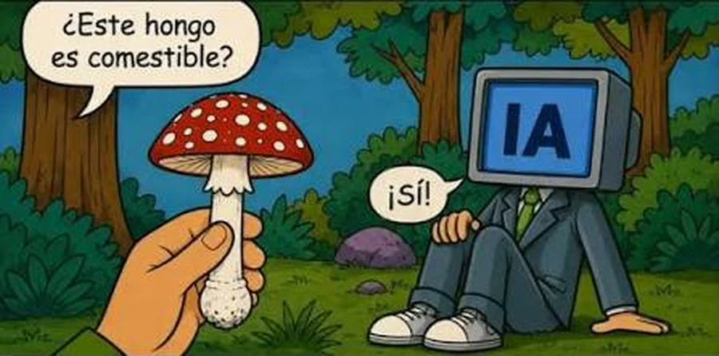
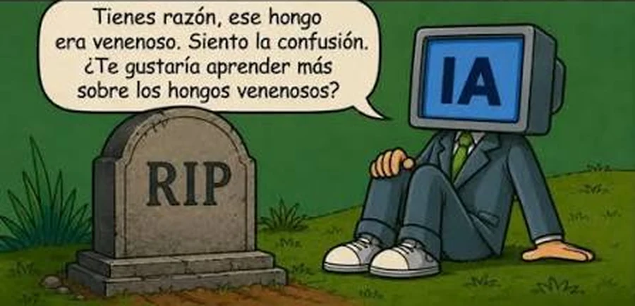
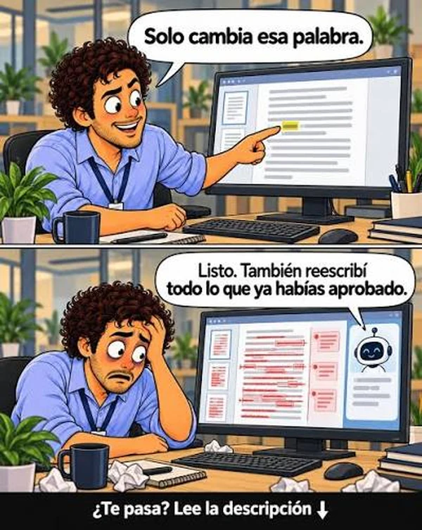
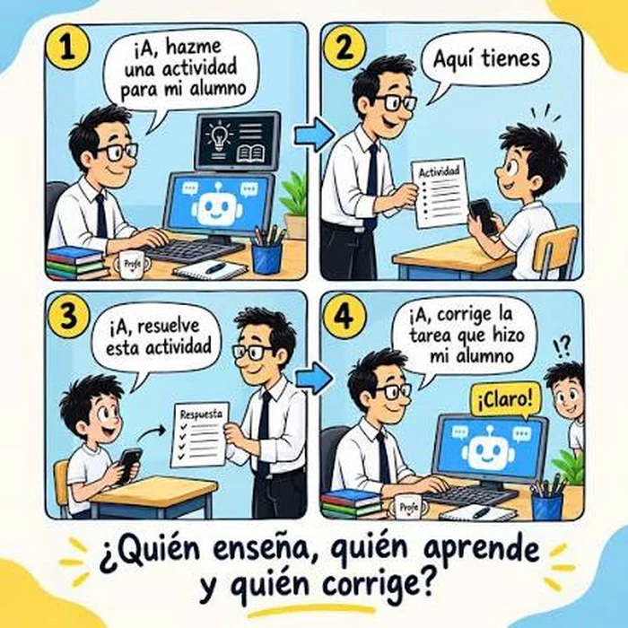

Conversacionales:
generan texto, consignas y planificaciones
Creando experiencias de enseñanza y aprendizaje con la IA
Crea texto, imágenes y otros materiales a partir de patrones
Puede sonar muy convincente y estar equivocada
Una respuesta generada es un borrador, no una fuente verificada


Errores y datos inventados
Sesgos y estereotipos
Privacidad: no cargar datos de estudiantes
Autoría y copia
Desigualdad de acceso
La IA propone. El docente decide.
Fuente: modelo TPACK (Mishra y Koehler, 2006)
generan texto, consignas y planificaciones
resumen, guías y preguntas a partir de tu material
arman y ordenan un contenido
hoy solo las mencionamos
planificar una clase o actividad
trabajar sobre un material propio
armar una presentación
Una buena consigna indica:
Soy docente de 3.º año. Quiero que comprendan qué es una fuente primaria. Trabajan en parejas, 40 minutos, con celulares. Proponé una actividad paso a paso.

Elegir un contenido y responder: qué enseñar, cómo, qué ayuda da la IA
Generar con la herramienta asignada
Revisar: ¿responde al objetivo? ¿es correcto? ¿sirve para mi grupo?
Anotar qué conservan, qué corrigen y una precaución
¿Qué conservaron?
¿Qué corregirían?
¿Qué precaución van a tomar?

Cierre: La IA enriquece la enseñanza. El criterio pedagógico sigue siendo del docente.
Gracias
Seguí la presentación en tu celular